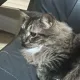

Meet the Yllabs Team

Literally.loganx
Frontend Developer
Leads the design and user interface of The Website. Focuses on creating a clean, intuitive experience for Discord users and ensures the bot’s commands are easy to access and visually appealing, He also works on making sure the anyalitcs are correctly organized for users to be able to manage their commands extremely fast.

yktixx;
Backend Developer
Maintains the backend systems that power Yllabs. Responsible for performance, reliability, and making sure all commands run smoothly across servers. Noah also ensures smooth UI's and he monitors bugs and implemnts pathces.